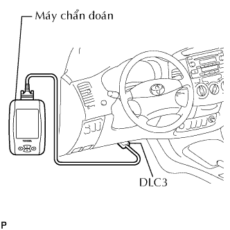

ĐỘNG CƠ > KIỂM TRA TRÊN XE |
| 1. KIỂM TRA PHẦN TỬ LỌC CỦA LỌC GIÓ |
Tháo bộ lọc gió.
Kiểm tra bằng quat sát xem lọc khí không bị bám bẩn hay dính dầu.
Nếu cần thiết, hãy thay bộ lọc gió.
| 2. KIỂM TRA BỘ CĂNG ĐAI V |
Để động cơ chạy không tải và sau đó tắt máy. Kiểm tra rằng dây đai dẫn động nằm giữa hai mép của puli căng đai.
Tháo dây đai dẫn động ra khỏi puli căng đai.
Quay puli và kiểm tra rằng vòng bi của bộ căng đai quay êm dịu.
Nếu cần thiết, hãy thay thế bộ căng đai.
Lắp đai dẫn động.
| 3. KIỂM TRA PULI CĂNG ĐAI SỐ 1 |
Để động cơ chạy không tải và sau đó tắt máy. Kiểm tra rằng dây đai dẫn động nằm giữa các mép của puli căng đai.
Tháo dây đai dẫn động ra khỏi puli căng đai.
Quay puli và kiểm tra rằng vòng bi bộ căng đai dịch chuyển êm dịu.
Nếu cần thiết, hãy thay puli căng đai.
Lắp đai dẫn động.
| 4. KIỂM TRA TIẾNG KÊU CỦA BỘ ĐIỀU CHỈNH KHE HỞ XUPÁP |
Rồ máy trong vài lần. Kiểm tra rằng động cơ không phát ra tiếng kêu bất thường.
Nếu tiếng kêu bất thường xuất hiện, hãy hâm nóng động cơ ở tốc độ không tải lâu hơn 30 phút. Sau đó lặp lại bước nói trên.
| 5. KIỂM TRA THỜI ĐIỂM ĐÁNH LỬA |
Hâm nóng động cơ rồi tắt máy.
|  |
Khi dùng máy chẩn đoán.
Kiểm tra thời điểm đánh lửa.
Nối máy chẩn đoán với giắc DLC3.
Khởi động động cơ và để nó chạy không tải.
Bật công tắc chính của máy chẩn đoán ON.
Truy cập vào các mục sau đây: Powertrain / Engine and ECT / Data List / IGN Advance.
 |
Khi không dùng máy chẩn đoán.
Kiểm tra thời điểm đánh lửa.
Dùng SST, nối cầu đo của máy đo tốc độ động cơ với cực 9 (TAC) của giắc DLC3.
 |
Kẹp đầu đo của đèn soi thời điểm đánh lửa vào 4 dây dẫn hoặc dây dẫn màu xanh đỏ của giắc nối cuộn đánh lửa xi lanh No.1.
Khởi động động cơ.
 |
Dùng SST, nối tắt các cực 13 (TC) và 4(CG) của giắc DLC3.

 |
Dùng đèn soi thời điểm đánh lửa, đo thời điểm đánh lửa.
Ngắt SST ra khỏi các cực 13 (TC) và 4(CG) của giắc DLC3.
Kiểm tra thời điểm đánh lửa.
Chắc chắn rằng thời điểm đánh lửa dịch sang phía sớm khi tăng tốc độ động cơ.
Tháo đèn soi lửa.
| 6. KIỂM TRA TỐC ĐỘ KHÔNG TẢI |
Hâm nóng động cơ rồi tắt máy.
Khi dùng máy chẩn đoán.
Kiểm tra tốc độ không tải.
Nối máy chẩn đoán với giắc DLC3.
Khởi động động cơ và để nó chạy không tải.
Bật công tắc chính của máy chẩn đoán ON.
Truy cập vào các mục sau đây: Powertrain / Engine and ECT / Data list / Engine SPD.
|
Khi không dùng máy chẩn đoán.
Kiểm tra tốc độ không tải.
Dùng SST, nối đầu đo của đồng hồ đo tốc độ động cơ với cực 9 (TAC) của giắc DLC3.
Khởi động động cơ và để nó chạy không tải.
Kiểm tra tốc độ không tải.
| 7. KIỂM TRA HỆ THỐNG ĐIỀU KHIỂN TỐC ĐỘ KHÔNG TẢI |
Hâm nóng và tắt động cơ.
Kiểm tra hệ thống điều khiển tốc độ không tải.
|
Dùng SST, nối tắt các cực 13 (TC) và 4(CG) của giắc DLC3.
Khởi động động cơ và để nó chạy không tải.
|
Sau khi nối tắt các cực (TC và CG), hãy kiểm tra rằng tốc độ động cơ thay đổi từ 1,000 đến 1500 vòng/phút trong 5 giây và sau đó trở về tốc độ không tải.
Nếu kết quả không như tiêu chuẩn, hãy kiểm tra cổ họng gió, mã DTC (xem trang Kích chuột vào đây) và dây điện.
| 8. KIỂM TRA ÁP SUẤT NÉN |
Hâm nóng và tắt động cơ.
Ngắt các giắc vòi phun.
Tháo các cuộn đánh lửa.
Tháo các bugi.
Kiểm tra áp suất nén của xi lanh.
Cắm đồng hồ đo áp suất nén vào lỗ lắp bugi.
Mở hoàn toàn bướm ga.
Trong khi quay khởi động động cơ, hãy đo áp suất nén.
| 9. KIỂM TRA CO/HC |
Khởi động và hâm nóng động cơ.
Chạy động cơ tại tốc độ 2500 vòng/phút trong khoảng 180 giây và động cơ chạy không tải.
Cắm đầu đo của máy đo CO/HC vào sâu ít nhất là 40 cm (1.3 ft.) vào đuôi ống xa.
Kiểm tra nồng độ CO/HC tại tốc độ không tải.
Nếu nồng độ CO/HC không như tiêu chuẩn, hãy khắc phục hư hỏng theo thứ tự được trình bày ở bảng dưới đây.
Kiểm tra hoạt động của cảm biến ôxy có sấy (Xem trang Kích chuột vào đây).
Hãy xem bảng dưới đây để tìm nguyên nhân khác, sau đó kiểm tra nguyên nhân và sửa chữa nếu cần.
| CO | HC | Hư hỏng | Các nguyên nhân |
| Bình thường | Cao | Chạy không tải không êm |
|
| Thấp | Cao | Chạy không tải không êm (Chỉ số HC dao động) |
|
| Cao | Cao | Chạy không tải không êm (Khói đen ra khỏi ống xả) |
|